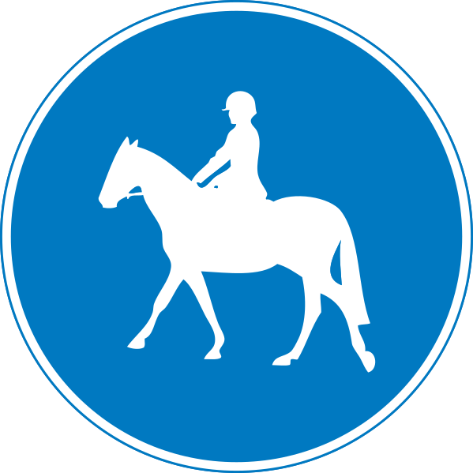

Loading...

Route to be used by horse riders only
🔵 Mandatory Signs
📖 Description
This mandatory sign indicates a path exclusively for horse riders. Only horses and ponies are allowed to use this route. Pedestrians, cyclists, and all motor vehicles are prohibited from entering this path to ensure safety for both riders and animals.